A leakage-free comparison of transaction-level, temporal and behavioral models. This page walks through the problem, the method, a working in-browser prototype, our results on the real dataset, and our novelty: a model that monitors its own SHAP explanations to decide when to retrain.
Problem statement. Develop and evaluate a leakage-free ML framework for financial fraud detection that compares transaction-level models with temporal and behavioral models, and explains individual fraud predictions.
Only 0.172% of transactions are fraud. A model that says "legitimate" for everything scores 99.83% accuracy and catches zero fraud. We use PR-AUC, precision, recall and F1 instead.
Transactions arrive as a stream. Gap since the previous transaction, recent count and deviation from the card's normal amount carry signal that a single row does not.
A random split trains on the future and tests on the past. A chronological split (train on early data, test on later) matches real deployment.
This runs in your browser. It generates a 48-hour stream of 20,000 card transactions with injected fraud bursts and concept drift, builds leakage-safe temporal features, trains logistic regression on the earliest 60%, tunes the threshold on the next 20% and tests once on the final 20%. Synthetic data, used to demonstrate the method. Results on the real dataset are in section 04.
| Exp | Features | Split | PR-AUC | ROC-AUC | Precision | Recall | F1 | Reading |
|---|
Move the slider: lower threshold catches more fraud but raises false alarms. Accuracy barely moves, which is why it is not used for model selection.
■ static + temporal ■ static only ● current threshold
Standardized logistic-regression coefficients. Red pushes toward fraud, green toward legitimate. In the Python version, SHAP plays this role for tree models.
Produced by run_experiments.py on all 284,807 transactions: 1,081 duplicates removed, chronological 60/20/20 split (test = hours 40.3–48.0, 74 frauds), threshold tuned on validation, 3 seeds.
| Model | PR-AUC | ROC-AUC | Precision | Recall | F1 |
|---|---|---|---|---|---|
| Logistic Regression | 0.7447 | 0.9811 | 0.960 | 0.649 | 0.774 |
| SMOTE + Logistic Regression | 0.7574 | 0.9792 | 0.980 | 0.649 | 0.781 |
| Random Forest | 0.8165 | 0.9614 | 0.885 | 0.757 | 0.816 |
| SMOTE + Random Forest | 0.8143 | 0.9734 | 0.876 | 0.730 | 0.796 |
| XGBoost (final, chosen on validation) | 0.7929 | 0.9733 | 0.896 | 0.739 | 0.810 |
| LightGBM | 0.8003 | 0.9838 | 0.907 | 0.743 | 0.817 |
| MLP | 0.7935 | 0.9671 | 0.835 | 0.725 | 0.775 |
| LSTM (k=5, chosen on validation) | 0.7867 | 0.9767 | 0.958 | 0.622 | 0.754 |
| GRU (k=5, chosen on validation) | 0.7950 | 0.9820 | 0.927 | 0.689 | 0.791 |
XGBoost PR-AUC 0.866 on a random split vs 0.793 on the chronological split. Random Forest 0.855 vs 0.817.
Small, mixed gain: XGBoost 0.793 → 0.797, LightGBM 0.800 → 0.803, RF 0.817 → 0.814. ULB has no card ID, so features describe the global stream only.
Final model: max-F1 threshold catches 55/74 with 7 false alarms; min-cost catches 58 with 41; 85% recall target catches 64 with 478.
Test PR-AUC for GRU rises from k=5 (0.795) to k=20 (0.805), then levels off at k=50. The window is still chosen on validation (k=5), never on test.
All models lose PR-AUC in the last third of the test period (XGBoost 0.84 → 0.53, only 12 frauds there).
Explained model: XGBoost (+temporal), so the temporal features can be inspected. Top features: V4, V14, V12, V11, V10, the same set the public benchmark reports.
Fraud labels arrive late, so a deployed model cannot tell from labels alone that it has started failing. Our model watches its own SHAP explanations of new, still-unlabelled transactions. When the way it reasons about the stream changes, it retrains. When only fields it ignores change, it stays quiet. Each alarm also names the features that caused it.
For every chunk of new transactions, measure how far the SHAP attributions have moved from the most recent training data: D = Σ W1(SHAPref, SHAPnow) / Σ E|SHAPref|. The alarm threshold is the 90th percentile of D on earlier training chunks, so no labels and no future data are used.
Retraining right after an alarm does not help, because the drifted chunk's labels are not known yet. An alarm opens a 4-chunk window in which the model retrains each time new labels arrive.
When a chunk's labels arrive and the model caught significantly fewer than half of its frauds (one-sided binomial test, α = 0.05), that also raises an alarm. This catches fraud that changes while the data still looks normal.
PR-AUC on each chunk (3-chunk mean). Triangles mark retrains. Where lines overlap, the strategies scored the same.
Measured on the frozen model: score divided by its alarm threshold. Above the dashed line means alarm.
PR-AUC from chunk 8 on, where the shifts start. Retrains in brackets.
On the harmful shift, 5 well-timed retrains (0.768) beat retraining every chunk (0.766 with 22 retrains). Retraining 5 times at random moments reaches only 0.745, so the timing comes from the monitor. When the fraud signature flips silently, only the label guard notices, and the model recovers from 0.001 to 0.618.
Limits. The real two-day stream has no drift worth acting on: retraining every chunk does not beat the frozen model, so here the monitor's value is the retraining it saves. The three shifts are controlled stress tests. On the harmful shift, PSI performs the same as our trigger; its weakness is the false alarms on irrelevant fields. Explanation shift as a measure comes from Mougan et al. (2023); our contribution is using it as a retraining trigger for fraud detection under delayed labels, with a label guard and a full baseline comparison.
Generated by run_experiments.py and run_novelty.py on the full ULB dataset.
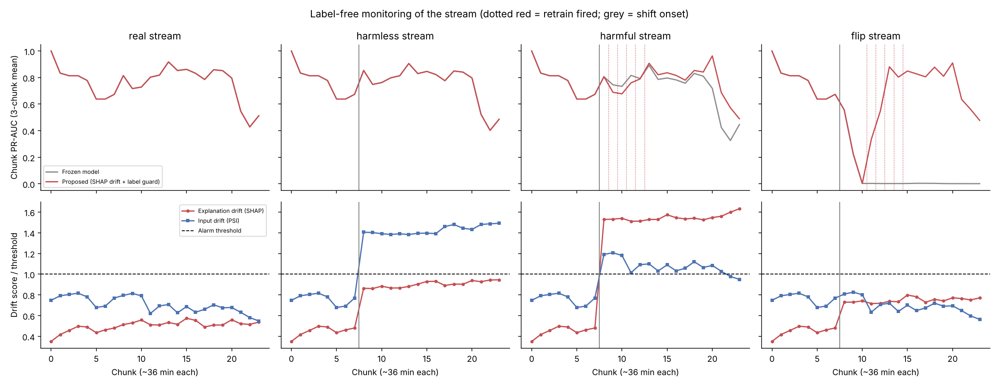
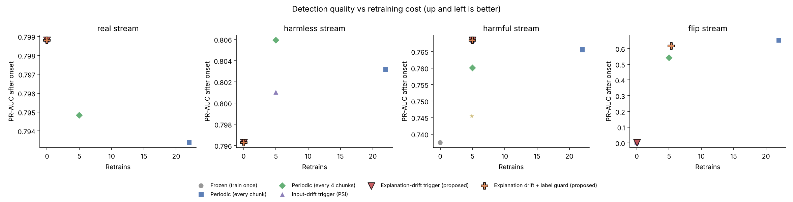
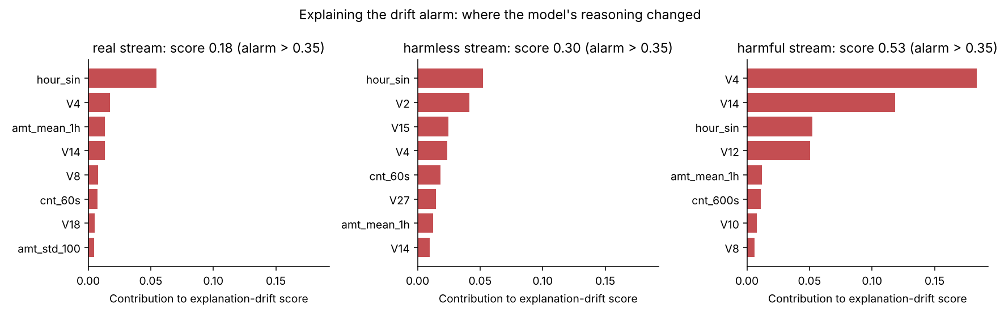
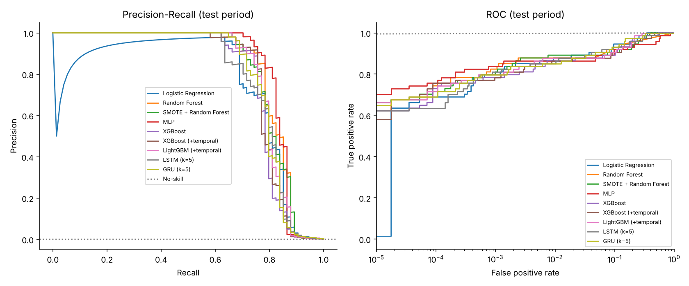
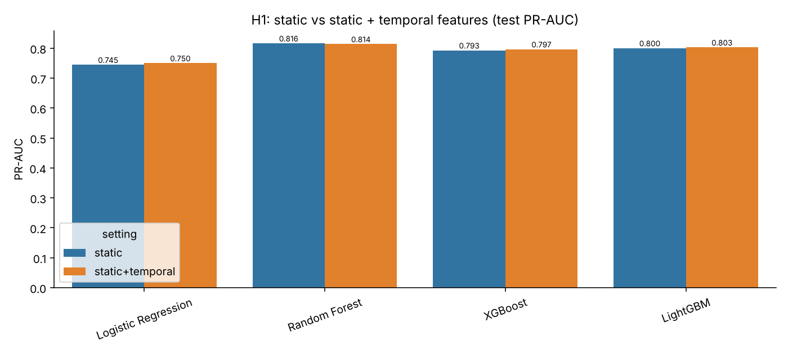
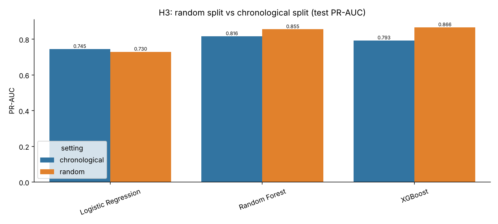
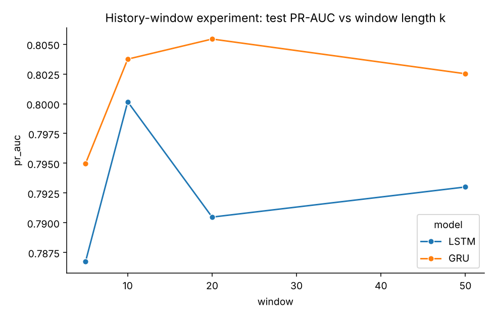
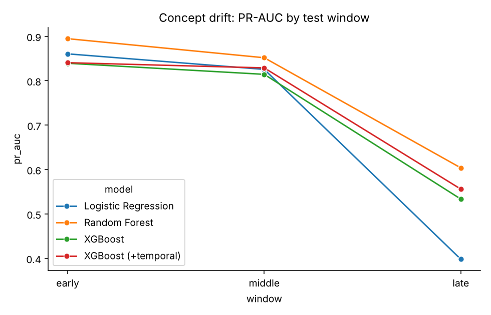
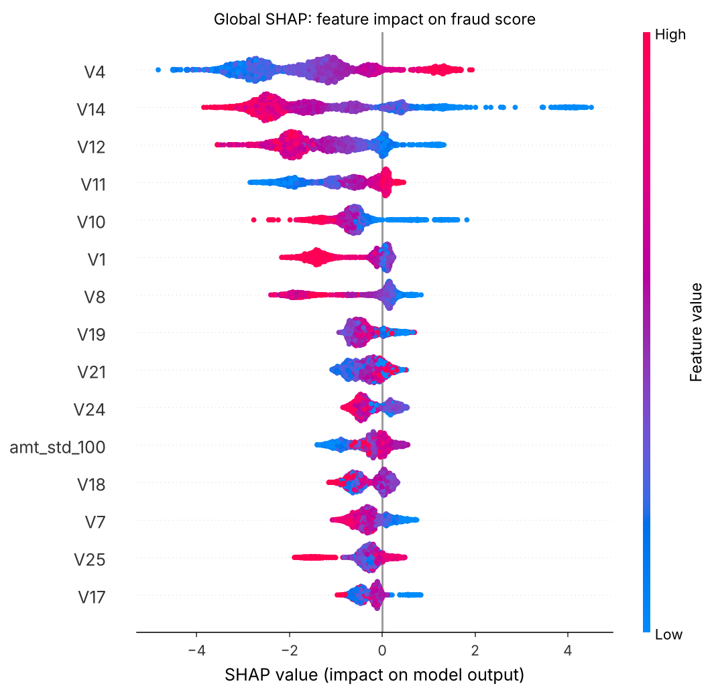
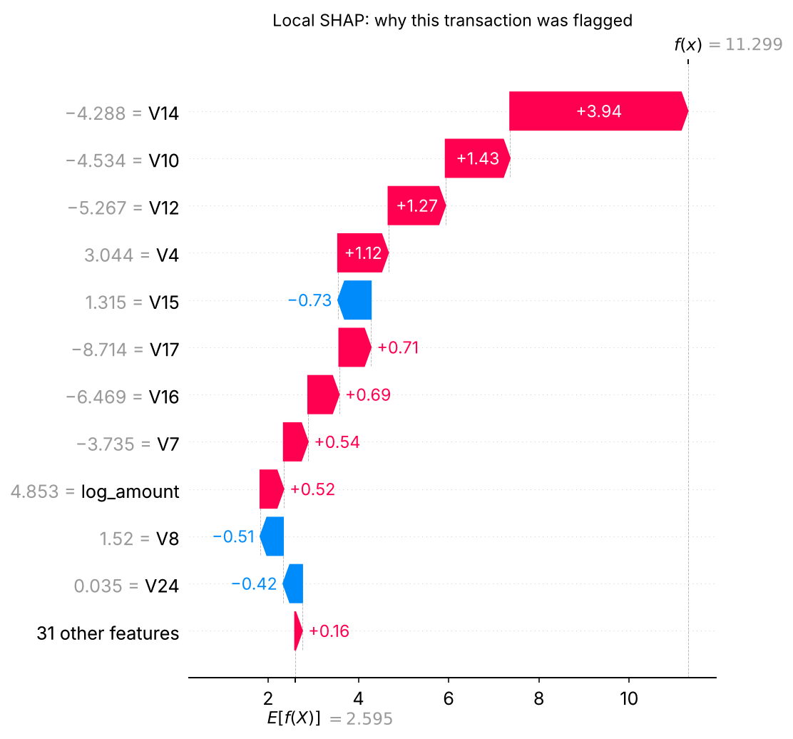
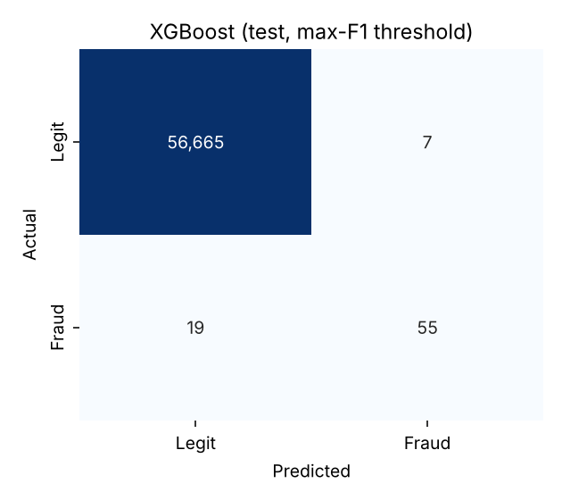
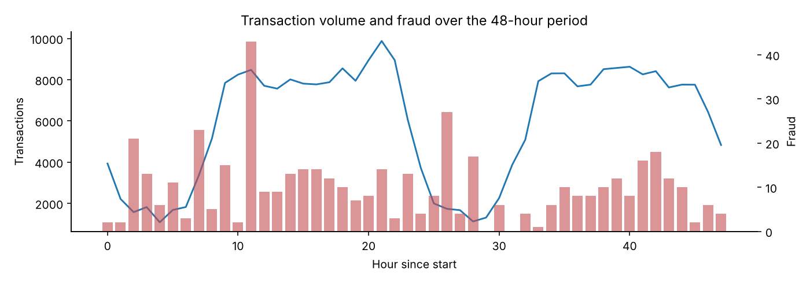
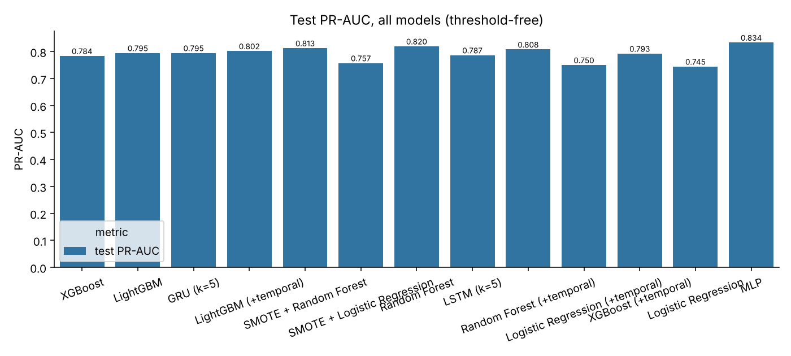
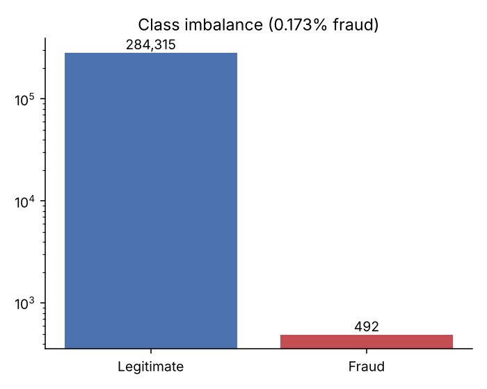
Public, reproducible 2026 benchmark runs on the real dataset. These are reported as external benchmark evidence, not as a fresh training run of this project.
| Model | Precision | Recall | F1 | ROC-AUC | PR-AUC | Status |
|---|---|---|---|---|---|---|
| Logistic Regression | 83.95% | 71.58% | 0.7727 | 0.9558 | 0.6939 | verified |
| SMOTE Logistic Regression | 88.46% | 72.63% | 0.7977 | 0.9582 | 0.7179 | verified |
| Random Forest | 89.87% | 74.74% | 0.8161 | 0.9189 | 0.7983 | verified |
| SMOTE Random Forest | 92.00% | 72.63% | 0.8118 | 0.9598 | 0.8016 | verified |
| MLP | 82.76% | 75.79% | 0.7912 | 0.9365 | 0.6838 | verified |
| XGBoost (time-ordered) | 93.00% | 71.60% | 0.8090 | 0.9840 | 0.7940 | verified |
| LightGBM | — | — | — | — | — | ours: 0.8003 |
| LSTM / GRU | — | — | — | — | — | ours: 0.787 / 0.795 (k=5) |
PR-AUC is the primary metric because fraud is so rare. Note how Random Forest has the lowest ROC-AUC but one of the highest PR-AUC values.
69 of 95 frauds caught with only 6 false alarms. Recall 0.7263, precision 0.9200.
| Model | Validation AP | Validation ROC-AUC | AP drop on future data | AUC drop |
|---|---|---|---|---|
| Logistic Regression | 0.7795 | 0.9727 | 0.4882 | 0.0406 |
| Random Forest | 0.7815 | 0.9314 | 0.3570 | 0.1028 |
| XGBoost | 0.7782 | 0.9859 | 0.2926 | 0.0057 |
XGBoost degraded the least on future data. Top SHAP features reported for XGBoost: V14, V4, V12, V10, V11.
| # | Hypothesis | Evidence so far |
|---|---|---|
| H1 | Leakage-safe temporal features improve PR-AUC / recall over static features. | small gain on ULB (no card IDs) |
| H2 | LSTM/GRU add value when valid entity histories exist. | comparable to trees (GRU 0.795) |
| H3 | Chronological evaluation shows more degradation than random evaluation. | supported (0.866 vs 0.793) |
| H4 | PR-AUC is a better selection signal than accuracy or ROC-AUC. | supported (RF: low ROC, high PR) |
| H5 | Best model by AUC is not always best at a practical false-positive limit. | supported |
| H6 | Novelty. Monitoring SHAP explanations of unlabelled traffic decides when to retrain better than input drift or a fixed schedule. | supported on controlled shifts; no false alarms |
| ULB European CC | IEEE-CIS | |
|---|---|---|
| Rows | 284,807 | 590,540 |
| Fraud | 492 (0.172%) | 20,663 (~3.5%) |
| Features | Time, V1–V28 (PCA), Amount | Card, device, email, address |
| Role | Primary benchmark | Behavioral / sequence validation |
ULB has no card IDs, so true per-card sequences are built on IEEE-CIS rather than faked from row order.
| Metric | Formula | Meaning |
|---|---|---|
| Precision | TP / (TP + FP) | Share of alerts that are really fraud |
| Recall | TP / (TP + FN) | Share of fraud that was caught |
| F1 | 2PR / (P + R) | Balance of precision and recall |
| PR-AUC | area under P–R curve | Primary metric under imbalance |
| ROC-AUC | area under TPR–FPR | Secondary; can look high even with weak precision |
| FPR | FP / (FP + TN) | Rate of wrongly flagged customers |
With 0.172% fraud, predicting "legit" for everything gives 99.83% accuracy and catches nothing. PR-AUC, recall and precision focus on the rare fraud class.
Any information from validation/test or from the future reaching training: random splits that train on later transactions, fitting the scaler or SMOTE on all data, or choosing the threshold on the test set.
SMOTE makes synthetic frauds by interpolating between real ones. If done before the split, synthetic points built from test frauds leak into training and inflate results.
ROC-AUC uses the false positive rate, whose denominator is the huge number of legitimate transactions, so many false alarms still look small. PR-AUC uses precision, which directly shows how many alerts are false.
Probabilities are skewed under imbalance and the right threshold depends on business cost (review capacity vs missed fraud). We tune it on validation data. The XGBoost benchmark selected 0.266.
SHapley Additive exPlanations: game-theory based attribution that splits a prediction into contributions from each feature. Global view: which features matter overall. Local view: why this one transaction was flagged.
Each sample is the window of the last k transactions (k = 5, 10, 20, 50) in time order, and the label is the last one. ULB has no card IDs, so the window is the global stream; at the window chosen on validation (k=5), GRU reached test PR-AUC 0.795 and LSTM 0.787, similar to tree models. Per-card sequences need IEEE-CIS. GRU is a lighter LSTM with fewer gates.
Fraud patterns and customer behavior change over time, so a model trained on old data degrades. We test it by evaluating early, middle and late windows separately. Try the drift slider in the prototype.
Two things. First, a controlled, reproducible comparison that measures how much temporal and behavioral information adds over strong baselines, under strict leakage-free chronological evaluation, with explainability and false-positive constraints. Second, the novelty: a model that monitors its own SHAP explanations on unlabelled traffic and decides when to retrain, with a delayed-label guard.
Explanation shift as a measure was proposed by Mougan et al. (2023). We use it as a retraining trigger for fraud detection under delayed labels. We add alarm-then-adapt retraining and a binomial delayed-label guard. We test it against a frozen model, periodic retraining, a PSI trigger and random retrain timing, on real, harmless, harmful and concept-drift streams.
On the real stream, retraining every chunk (22 times) gave 0.793 PR-AUC against 0.799 for never retraining, so it cost compute for nothing. On the harmful shift, our 5 well-timed retrains (0.768) matched retraining every chunk (0.766), and 5 retrains at random times reached only 0.745.
PSI reacts to any change in the inputs, including fields the model ignores. After the harmless shift, PSI raised an alarm on every chunk and retrained 5 times; the SHAP monitor stayed quiet. SHAP drift weighs each change by how much the model relies on that feature, and each alarm names the features responsible.
A change that only affects the rare fraud rows, such as the sign flip: the unlabelled data looks normal, so no label-free monitor can see it. That is why we added the delayed-label guard. It fired 2 chunks after the flip and recovered PR-AUC from 0.001 to 0.618.